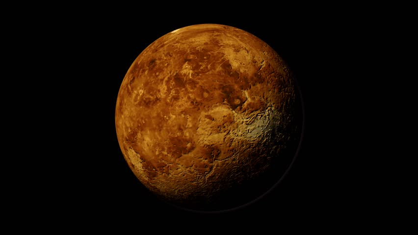

Venus is a terrestrial planet and is sometimes called Earth's "sister planet" because of their similar size, mass, proximity to the Sun, and bulk composition. It is radically different from Earth in other respects. It has the densest atmosphere of the four terrestrial planets, consisting of more than 96% carbon dioxide. The atmospheric pressure at the planet's surface is 92 times that of Earth, or roughly the pressure found 900 m (3,000 ft) underwater on Earth. Venus is by far the hottest planet in the Solar System, with a mean surface temperature of 735 K (462 °C; 863 °F), even though Mercury is closer to the Sun. Venus is shrouded by an opaque layer of highly reflective clouds of sulfuric acid, preventing its surface from being seen from space in visible light. It may have had water oceans in the past, but these would have vaporized as the temperature rose due to a runaway greenhouse effect.[20] The water has probably photodissociated, and the free hydrogen has been swept into interplanetary space by the solar wind because of the lack of a planetary magnetic field. Venus's surface is a dry desertscape interspersed with slab-like rocks and is periodically resurfaced by volcanism.